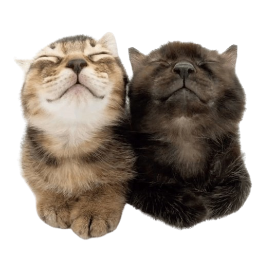

100 things I love about you

- 4. Your laugh is so silly and cute
- 5. You're always there for me
- 6. You make me feel comfortable
- 7. You're smart
- 8. Your voice is soothing
- 9. You have the cutest smile
- 10. You always are there for me
- 11. You have a pretty fashion sense
- 12. You are funny
- 13. You always listen to my problems and comfort me
- 14. You have beautiful eyes
- 15. Same goes for the rest of your face
- 16. The way you think
- 17. Your love for animals
- 18. Your interests and hobbies
- 19. Your taste in music
- 20. Your generosity
- 21. Your honesty
- 22. Your loyalty
- 23. The way you respect boundaries
- 24. The way you make ordinary things feel special
- 25. Your thoughtfulness
- 26. How you never fail to make me laugh
- 27. How you care about me
- 28. The way the time I spend with you passes so quick
- 29. How even playing games together makes me feel so happy
- 30. Your commitment to growth and development
- 31. The way you express gratitude
- 32. Your knowledge about tech and games
- 33. Your willingness to learn and know more
- 34. The fact that you know how to cook without burning the kitchen down XDD
- 35. How you make me try to be a better person
- 36. The way I feel comfortable showing affection without getting judged
- 37. The way you brighten up my world and life
- 38. Your personality
- 39. The way you help others
- 40. Your ability to adapt
- 41. The way you handle changes
- 42. Your thoughtfulness in small gestures
- 43. Your commitment to a healthy life style
- 44. Your sincerity
- 45. How I feel valued because of you
- 46. Your silly willy side
- 47. The way we share even the same opinions
- 48. Your curiosity
- 49.Your ability to stay calm in tough situations
- 50. How food makes you happier (just like me xd)
- 51. The fact that you are willing to admit your mistakes and wrongs
- 52. How you know the way to brighten up a convo
- 53. How you can love unconditionally
- 54. The way even my bad days become good with you
- 55. How you use the cat spray in val when I am sad about my kda xd
- 56. The way you make me feel somehow safe
- 57. Your appreciation for beautiful things and places
- 58. Your loud introvert personality
- 59. Your taste in movies and shows
- 60. The way you inspire me
- 61. How every moment spent together is a nice one
- 62. Your appreciation to someone's sweet actions
- 63. Your thoughtful gifts and words
- 64. Your strength as a person
- 65. Your compassion towards animals
- 66. Your love for travel and different cultures
- 67. Your wisdom
- 68. The way you manage to get things done / to work
- 69. How everything you make seems so effortless
- 70. The way you balance fun and responsibility
- 71. Your enthusiasm for personal growth
- 72. Your attention to details
- 73. How you make my life more colourful
- 74. Your optimism for the future
- 75. The way you respect personal space
- 76. How you manage to be mannered even towards people you do not like
- 77. Your love for family and friends
- 78. How you enjoy quiet moments
- 79. The way you manage to comfort me just by being there for me
- 80. How you have many achievements (more to come)
- 81. How you help others grow
- 82. The way you share things that happened in a day
- 83. Your compliments
- 84. Your unmatchable love for coffee xd
- 85. Your silly sick voice
- 86. Your love for not so bright / sunny days
- 87. The silly little memes you send
- 88. The way you are a tryharder
- 89. The way you talk about people you look up to
- 90. Your ways of showing affection
- 91. How you meow during val games LMAO
- 92. Your always handsome little face
- 93. Your actions
- 94. Your words
- 95. Your way of talking
- 96. The silly pics you send
- 97. Your sleepy self after you wake up
- 98. Your goals
- 99. Your weaknesses
- 100. YOU